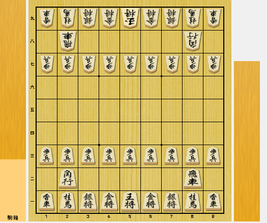

インドの「チャトランガ」に由来します。将棋は、9×9の正方形のマス目に、それぞれの駒を置いて、相手の王将を詰ませることを目的とします。 将棋には、歩、香、桂、銀、金、角、飛、王の8種類の駒があり、それぞれに動き方や役割が異なります2。また、将棋では、取った駒を持ち駒として、自分の手番に好きな場所に打つことができます。 これが将棋の特徴であり、戦略の幅を広げる要素です
以下の名前は、将棋で使う“型＝戦法”です。 ボタンをクリックすると、それぞれの型へジャンプします。
| 攻めの型 | 守りの型 | ||||
|---|---|---|---|---|---|
| 棒銀 | 穴熊 | 中飛車 | 美濃 | 三間飛車 | elmo囲い |